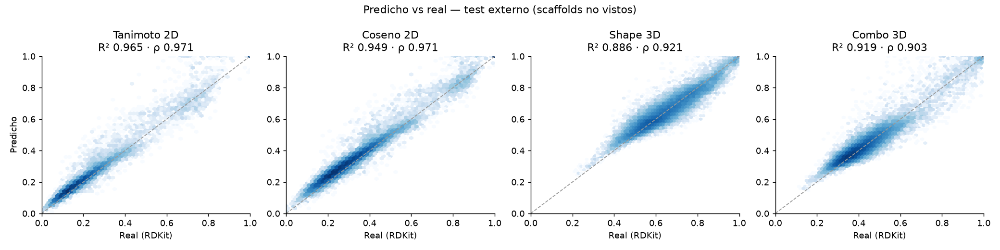
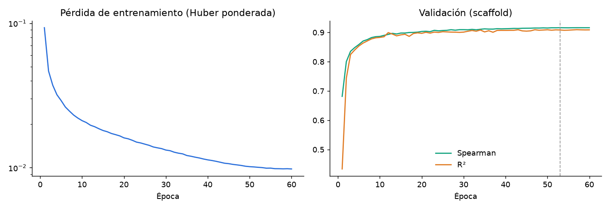
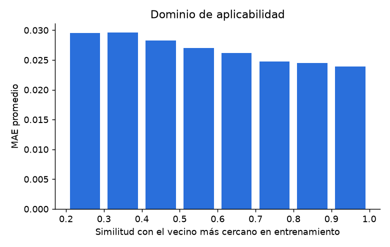

Ajustes: pesos del Score y aumento en inferencia
Dominio de aplicabilidad
Verificación 2D exacta
Tanimoto y Coseno calculados con RDKit en el navegador vs lo que predice la red.
Descriptores (RDKit)
Top 3 referencias
Ranking completo
Valores = promedio de las escrituras SMILES; ± = desviación estándar (incertidumbre del modelo). Score = suma ponderada de las 4 métricas.
12 benzimidazoles ensayados en laboratorio por la Universidad de Salamanca, usados como referencia del ranking.
Comparación con el PIA-02
Por métrica — test externo (scaffolds no vistos)
Calidad del ranking por referencia
NDCG@k y Precision@k miden cuánto coincide el top-k del modelo con el top-k real del Score multi-métrica. La línea base ordena solo por Tanimoto 2D exacto, como haría una búsqueda en PubChem/ChEMBL.
¿Aporta información 3D más allá del 2D?
Comparación contra una regresión lineal que intenta deducir Shape/Combo 3D a partir de Tanimoto y Coseno exactos.
Curvas y dispersión



Qué hace
Dado un compuesto en notación SMILES, la red Siamese (encoder CNN-1D compartido con kernels 3, 5 y 7) genera un embedding de la consulta y de cada referencia y predice las cuatro métricas de similitud. El Score combina las cuatro: 0.35·Tanimoto + 0.25·Coseno + 0.20·Shape + 0.20·Combo (pesos ajustables).
Las cuatro métricas
- Tanimoto 2D — fragmentos compartidos entre fingerprints Morgan ECFP4 (2048 bits).
- Coseno 2D — ángulo entre los mismos fingerprints; lectura complementaria del parecido 2D.
- Shape 3D — solapamiento de volumen gaussiano del mejor alineamiento de confórmeros (enfoque ROCS).
- Combo 3D — (Shape + Color)/2, donde Color mide la coincidencia de grupos farmacofóricos (donadores/aceptores, cargas, anillos).
Mejoras de esta versión
- Validación externa por scaffold: el test usa moléculas con esqueletos nunca vistos en entrenamiento.
- 3D real para todos los pares con RDKit rdShapeAlign (open source, mismo enfoque que ROCS) y ensambles de 10 confórmeros; pipeline reproducible sin licencia.
- Más datos: ChEMBL del PIA-02 completo + fármacos aprobados y compuestos diversos de ChEMBL 35 como señuelos.
- Pares de identidad y aumento con SMILES aleatorizados: identidad ≈ 1 sin atajos y predicciones invariantes a la escritura.
- Simetría exacta por construcción, incertidumbre por TTA, dominio de aplicabilidad y métricas de ranking (NDCG@k, Precision@k).
Límites
Mide similitud, no actividad biológica. Es más confiable para moléculas cercanas al dominio (benzimidazoles y afines); fuera de él la predicción es extrapolación y debe interpretarse con cautela.
Autora: Hellen Pamela Aguilar Noguera · PIA-02 · CENFOTEC + Universidad de Salamanca · Código: github.com/HellenP-A/SIMILITUDMOLECULAR